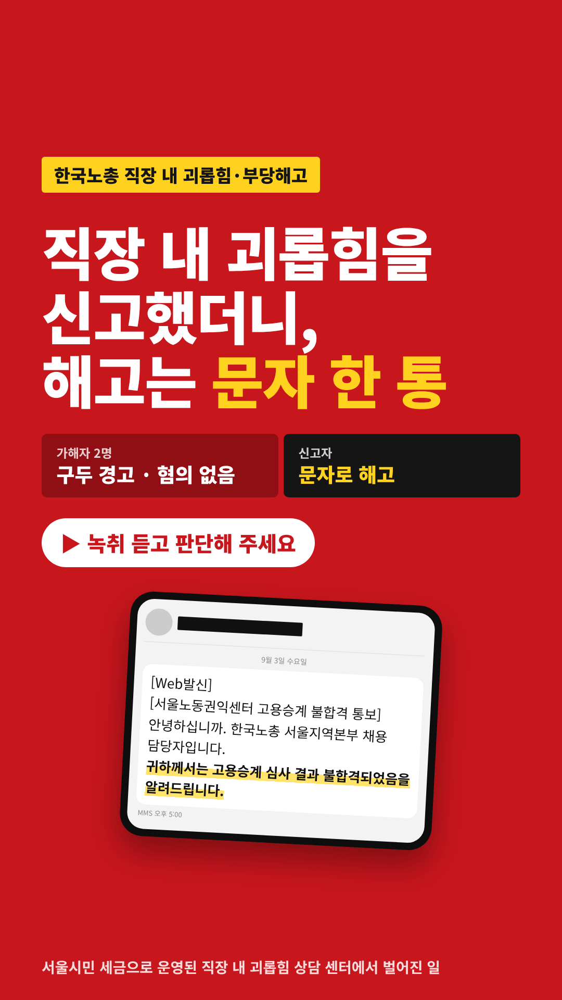
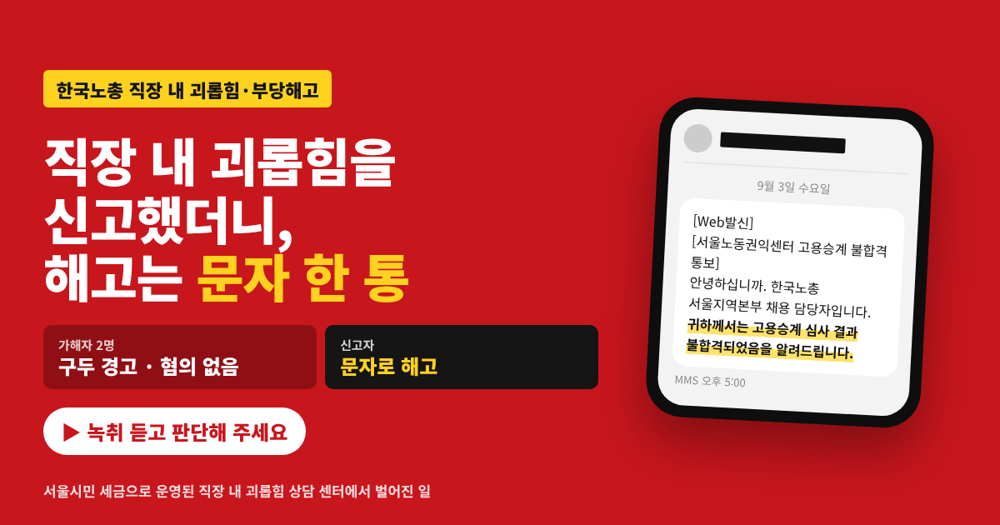

함께 알려 주세요
이미지를 저장해 SNS에 올리고, 아래 링크와 문구를 함께 붙여 주세요. 휴대폰에서는 이미지를 길게 누르면 저장할 수 있습니다.



서울시민의 세금으로 한국노총이 운영하던 노동자종합지원센터, 직장 내 괴롭힘 상담을 하던 그곳에서 5년 7개월을 일한 팀장 유상석. 그는 상급자 두 명의 직장 내 괴롭힘을 신고했습니다. 가해자들은 '구두 경고'와 '혐의 없음'으로 끝났고, 신고자는 2025년 9월 3일 '고용승계 불합격' 문자 한 통으로 일터에서 밀려났습니다. 녹취를 직접 듣고 시민 여러분이 판단해 주세요.
녹취 듣고 판단하기동남권 서울특별시노동자종합지원센터는 서울시민의 세금으로 취약노동자를 돕는 기관입니다. 이곳의 핵심 업무 가운데 하나가 바로 직장 내 괴롭힘 상담이었습니다.
센터 노동권익개선팀은 직장 내 괴롭힘 상담을 맡았습니다. 피해자의 경위서에 따르면 직장 내 괴롭힘 상담은 센터 전체 상담의 30%를 넘었습니다. 피해자는 신고 뒤에도 가해자들과 같은 공간에서, 다른 노동자들의 직장 내 괴롭힘 상담 소리를 들으며 일해야 했습니다.
가해자로 지목된 선임팀장은 입사 초기 법률지원팀장으로 직장 내 괴롭힘 상담을 직접 담당했던 사람입니다. 무엇이 직장 내 괴롭힘인지, 신고를 받으면 무엇을 해야 하는지 가장 잘 아는 자리에 있었습니다.
신고를 받고도 약 두 달간 조사와 분리 조치가 없었고, 결론은 구두 경고와 혐의 없음이었습니다. 피해자는 이 사건을 직장 내 괴롭힘을 잘 아는 사람들이 암묵적으로 동의해 덮은 일로 봅니다. 이것이 해고로 이어진 모든 일의 시작이었습니다.
서울시가 노동자종합지원센터들을 서울노동권익센터로 통폐합하면서 동남권센터 운영이 끝났습니다. 센터를 위탁 운영하던 한국노총은 소속 직원을 다른 자리로 옮기는 대신 사직서를 요구했고, 이어 '고용승계 면접'을 거치게 한 뒤 문자로 불합격을 알렸습니다.
유상석 팀장은 동남권센터 지역협력팀장으로 일하며 취약계층 노동자의 권익 보호, 거점·교육 사업을 맡아 왔습니다. 그는 사직서를 끝까지 내지 않았습니다. 사직하지 않은 직원에게 '불합격'을 통보한 것은 사용자가 일방적으로 근로관계를 끊은 것, 곧 해고라는 것이 이 사건의 출발점입니다.
유상석 팀장은 상급자들의 직장 내 괴롭힘을 고용노동부 동부지청에 진정한 진정인입니다. 재심이유서는 이 사건의 본질을 '직장 내 괴롭힘 신고에 대한 보복성 해고'라고 봅니다.
녹취 원문 전체 보기 → 녹취록 2건의 내용을 직장갑질119의 '직장 내 괴롭힘 5개 범주 25개 행위' 분류에 맞춰 정리했습니다. 관련자는 직책으로만 적었습니다.
| 유형 | 녹취에서 확인되는 상황 | 관련자 |
|---|---|---|
| 옆자리 압박 | 센터장실이 따로 있는데도 의자를 끌고 와 피해자 바로 옆에 앉음. "자리에 가서 찾아 달라"는 요청과 불편하다는 호소가 14번 나오지만 "내 마음"이라며 버팀 | 당시 센터장 |
| 감시 | 개인 메신저 화면을 옆에서 들여다보고 삭제를 지시함 | 당시 센터장 |
| 비하 | 나이와 개인 별칭을 들어 비꼬고, '고귀하신' 같은 표현으로 조롱함 | 당시 센터장 |
| 폭언 | 2024. 1. 25. 센터장과 선임팀장이 있던 센터장실을 나서자 안에서 "건방진 새끼"라는 말이 들림. 되돌아가 따지자 센터장은 모른다며 손짓으로 나가라고 함. 1. 31. 녹취에서 이를 다시 따지자 센터장은 "누구를 지칭한 적 없다"고 답함 | 당시 센터장 |
| 모욕 | 다른 직원들이 있는 자리에서 과거 징계 내용을 거론함 | 선임팀장 |
| 비하·무시 | "나이를 어떻게 먹었는지", "업무 능력이 한참 떨어진다"는 취지의 발언 | 선임팀장 |
한국노총이 고용승계 심사용으로 낸 서류에는 상벌확인서가 포함됐습니다. 진정 이후 받은 징계는 아직 다툼이 끝나지 않았습니다. 그 기록이 심사에 그대로 반영됐을 수 있습니다.
신청인 측은 한국노총이 초심 진행 중 직장 내 괴롭힘 재진정 취하를 조건으로 합의금을 제시했다고 밝힙니다. 계약 만료로 끝난 일이라면 진정 취하를 조건으로 돈을 제시할 이유가 없습니다.
센터장은 운영규칙을 "같이 찾아보자"며 의자를 끌고 와 유상석 팀장 바로 옆에 앉았습니다. 다른 직원들이 일하는 사무실이었습니다. 유상석 팀장은 "자리에 가서 찾아 보여 주시면 따르겠다", "다른 직원들 불편하게 하지 말라", "불편해서 일을 못 하겠다"고 거듭 말했습니다. 센터장은 "여기 앉아서 찾아도 된다", "자리에 가든 안 가든 내 마음"이라며 끝까지 옆자리를 지켰습니다.
녹취 1 원문에서 옆자리 압박으로 표시한 부분입니다. 불편하다는 분명한 거부에도 다른 직원들 앞에서 옆에 붙어 앉아 지켜본 행위는 그 자체로 직장 내 괴롭힘이라는 것이 피해자의 주장입니다.
피해자의 사건 경위서(2024. 4. 8., 8. 26.)와 서울시장에게 낸 진정서(2025. 7. 14.)에 적힌 내용입니다. 모두 신청인 측 주장입니다.
간담회 품의서 문제로 센터장실에서 센터장·선임팀장과 언쟁. 6시 약속이 있다며 나오자 센터장실 안에서 "건방진 새끼"라는 말이 들렸습니다. 다시 센터장실로 들어가 따지자 센터장은 모른다고 하며 손짓으로 나가라고 했습니다
직원들이 있는 사무실에서 개인 메신저를 들여다보고 삭제를 지시, 의자를 끌고 와 옆에 앉음
"이것은 직장 내 괴롭힘"이라고 1:1로 신고. 이후 약 두 달 동안 조사나 분리 조치가 없었다고 주장. 센터장은 그 뒤 직원들 앞에서 사과했지만 피해자는 진심 어린 사과로 받아들이지 않음
오전 11시경과 오후 1시 30분경 두 차례. 오후에는 외부 상담 노무사도 같은 공간에 있었음
4. 8.에 센터장 건, 8. 26.에 선임팀장 건 사건 경위서 제출. 서울동부지청에도 진정
한국노총 인사위원회는 두 건 모두 직장 내 괴롭힘의 정도가 약하다고 봤습니다. 센터장은 운영규칙에도 없는 '징계외 처분(구두 경고)', 선임팀장은 '혐의 없음'. 피해자는 결과를 공식 통보받지 못하고 취재 기자를 통해 들었다고 주장. 가해자와 분리되지 않은 채 같은 공간에서 계속 근무
서울동부지청은 선임팀장 건에서 사측 의견을 그대로 받아들였고, 지청의 전문가 심의위원회도 같은 결론을 냈다고 신청인은 밝힙니다
서울시가 정한 전체 사업비 안에서 센터가 팀별로 나눴고, 피해자가 1천만 원 수준을 요청했지만 받아들여지지 않았다고 주장
센터장이 전 직원 앞에서 "업무용 컴퓨터를 가져가 확인할 수 있다", "센터가 9월에 문을 닫은 뒤 어떤 일이 벌어질지는 알아서 판단하라"는 취지로 말했다고 주장
위탁기관 관리·감독, 진상 조사, 분리 조치, 예산 삭감 경위 조사를 요청(국민신문고)
심사 서류에 상벌확인서 포함. 9. 3. 문자로 불합격 통보
근로기준법 제76조의3 제6항. 사용자는 직장 내 괴롭힘을 신고한 노동자와 피해 노동자에게 해고나 그 밖의 불리한 처우를 해서는 안 됩니다. 위반하면 3년 이하 징역 또는 3천만 원 이하 벌금(제109조 제1항)에 처해집니다.
유상석 팀장이 대화 당사자로서 녹음한 녹취 2건의 녹취록 전문입니다. 피해자가 모욕감을 느꼈거나, 다른 직원들이 있는 자리에서 직장 내 괴롭힘으로 느낄 수 있는 부분을 색으로 표시했습니다. 녹취 1에서는 센터장이 의자를 끌고 와 옆에 앉은 뒤 자리로 가 달라는 요청을 거부하는 장면을 옆자리 압박으로 따로 표시했습니다. 피해자 본인의 날 선 발언도 빼지 않고 그대로 실었습니다.
음성을 불러오는 중입니다.
녹취록은 받아쓰기 원문이라 오탈자가 있습니다. 관련자 실명은 직책으로 바꾸거나 ○○○로 가렸고, 표시와 설명은 신청인 측 관점의 정리입니다.
녹취가 남아 있는데도, 직장 내 괴롭힘을 판단한 곳들은 모두 가해자 쪽 손을 들어줬습니다.
"직장 내 괴롭힘이 약하다." 정식 징계가 아니라 운영규칙에도 없는 '징계외 처분'
직원들 앞에서 징계 이력을 거론하고 "인생을 어떻게 살았는지"라고 한 발언에도
사측 의견을 그대로 받아들였고, 지청 전문가 심의위원회도 같은 결론(신청인 측 설명)
신고 뒤 팀 사업비 84% 삭감, 고용승계 심사에서 혼자 탈락, 문자 한 통으로 통보
녹취를 들어보셨다면, 각 장면이 직장 내 괴롭힘인지 직접 판단해 주세요. 선택하면 SNS나 댓글에 붙여 넣을 수 있는 문장이 만들어집니다.
선택한 내용은 이 화면에만 표시되고 어디에도 전송·저장되지 않습니다.
"서울특별시가 설립하고 한국노총이 수탁 운영하는 기관". 거점사업팀장 1명 모집
최초 계약서(2020. 3. 7. 작성)에는 채용기간을 '2022. 11. 26.까지(1기 수탁 사업기간)'로 적음
거점사업팀이 지역협력팀으로 바뀜
위수탁기간 2022. 11. 27.~2025. 9. 30. 협약에 고용승계 80% 이상, 고용 유지 의무 명시
한국노총은 답변서에서 "근로계약기간이 만료된 시점에도 별도의 근로계약을 체결하지 않았다"고 인정함
사용자 한국노총 위원장 명의. 채용일자만 있고 종료일 없음. 직책은 지역협력팀 팀장
내부 회의자료에 '도심·동남권센터 2025년 하반기 사업종료'(서울시 공문 2023. 8. 14. 접수) 명시. 2년 넘게 대비할 시간이 있었음
도심·동남권센터 위수탁 협약 2025. 9. 30. 만료, 인수인계 일정 통보
한국노총 서울지역본부가 서류를 요청하고, 총연맹이 이력서·직무기술서와 상벌확인서를 모아 제출. 동의서 수신처는 '한국노총 서울지역본부 의장'
선임팀장을 통해 "전부 사직서를 개인적으로 써서 내라"는 공지. 유상석 팀장은 거부
서울지역본부가 협조를 요청하자 총연맹이 위원장 명의로 권역센터장에게 참석 지시. 평가 대상 11명(동남권 6명)
장소: 한국노총 서울지역본부 1층. 사직서를 내지 않은 상태에서 응시
발신 명의는 근로계약 당사자인 총연맹이 아닌 '한국노총 서울지역본부'
위탁 협약 만료일에 맞춘 해고. 해고 사유와 시기를 적은 서면은 받지 못함
공인노무사 대리
신청인 측에 따르면, 한국노총은 직장 내 괴롭힘 재진정 사건 등을 모두 취하하는 조건으로 대리인을 통해 두 차례 합의금을 제시했습니다. 신청인은 거절했습니다.
"기간제법상 예외에 해당하는 기간제 근로자이고, 위탁 종료로 계약이 자동 종료됐으므로 해고가 아니다"라는 주장
서울2025부해10102. 판정서는 2026. 3. 24.에 받음
재심이유서 제출(2026. 6. 2., 6. 4.)
행정소송과 민사소송을 검토하고 있습니다.
처음 계약에는 '수탁 사업기간까지'라는 기한이 있었습니다. 그런데 2기 협약 뒤 다시 쓴 2023년 계약서에서 그 기한이 빠졌습니다.
두 계약서 모두 서울시나 센터장이 아니라 '한국노동조합총연맹 위원장'의 이름과 직인으로 맺었습니다.
1기 계약은 수탁기간에 맞춰 끝나도록 적었지만, 갱신 계약에는 그 문구가 없습니다. 기간의 정함이 없는 근로계약, 곧 무기계약이라는 것이 신청인 측 주장입니다.
'근무장소: 동남권센터'는 일하는 곳을 정한 것이지 계약이 끝나는 조건이 아닙니다. 센터가 문을 닫으면 전보 사유는 될 수 있어도 해고 사유는 될 수 없습니다.
아래는 한국노총이 노동위원회에 낸 자료(사 제1~9호증)에서 확인되는 사실입니다.
'도심·동남권센터 2025년 하반기 사업종료'를 2023년 8월에 이미 공유했습니다. 해고를 피할 방법을 찾을 시간이 2년 넘게 있었습니다.
2023년 말 종료된 동북·서남권센터는 '노동권익센터에 사업 흡수(고용보장 80%)'로 정리했고, 팀원 승진 인사를 해 '노동권익센터 이직 시 불이익을 차단'했습니다.
동남권센터는 '별도 채용과정 없이 센터 전직 조건 완화'를 요청했습니다. 실무자 의견란에는 '부정의견, 채용 관련 서울시 지침 강화'라고 적혔습니다.
한국노총은 기존 노동자를 우선 고용해 고용승계 비율 80% 이상을 지키고, 위탁기간 중에도 고용을 유지해야 합니다. 협약 만료 때는 새 수탁기관으로 고용승계가 되도록 최대한 협조해야 합니다.
심사 서류는 '한국노총 서울지역본부 의장' 앞으로 냈고, 면접은 서울지역본부 1층에서 열렸습니다. 참석 지시는 총연맹 위원장 명의였습니다. 외부 기관이 아니라 한국노총 안의 절차였습니다.
운영규정은 센터 직원을 센터장·선임팀장·팀장·팀원으로 정하고 정년을 만 60세로 둡니다. 수탁기간에 묶인 계약직은 '정원외 직원'으로 따로 규정합니다. 한국노총이 "그대로 썼을 뿐"이라는 근로계약서 양식(별표1)에도 계약기간 칸이 아예 없습니다.
최초 계약기간이 끝난 2022년 11월에 새 계약 없이 계속 일하게 했다는 점, 그리고 서울시·서울지역본부와 협의해 '80%만 승계'하기로 정했다는 점을 답변서에 적었습니다.
서울시가 2025년 6월 통보한 것은 위수탁 협약 만료와 인수인계 일정입니다. 노동자와의 근로계약을 끝내라는 내용은 없습니다.
동남권센터 면접 대상은 6명이었습니다. 신청인 측 주장에 따르면 그 가운데 1명은 이미 사직서를 낸 센터장이었습니다. 승계를 원한 직원 중 떨어진 사람은 유상석 팀장 한 명뿐입니다.
2023년에 기한 없는 계약서를 새로 쓴 사람은 유상석 팀장과 재무팀장 두 명입니다. 재무팀장은 서울노동권익센터 재무팀으로 승계돼 같은 일을 하고 있습니다.
유상석 팀장보다 늦게 입사한 직원들은 모두 승계됐습니다. 가장 오래 일한 사람만 빠졌습니다.
5년 7개월의 업무를 단 10분짜리 면접으로 평가했습니다.
위탁업체가 바뀐 사건이 아닙니다. 사용자 한국노총은 그대로 있고, 통합된 센터 운영에도 한국노총 서울지역본부가 관여합니다. 외부 고용승계가 아니라 내부 인력 재배치의 문제입니다.
위탁기간이 끝나 계약이 저절로 끝난다면 사직서는 필요 없습니다. 사직서를 받으려 했다는 것은 사직 없이는 근로관계가 계속된다는 것을 알고 있었다는 뜻입니다.
징계해고 사유도, 통상해고 사유도 없습니다. 위탁 종료를 이유로 들려면 정리해고 요건(긴박한 경영상 필요, 해고 회피 노력, 공정한 기준, 협의)을 갖춰야 했지만 아무것도 하지 않았습니다.
해고 사유와 시기를 적은 서면 통지 없이 문자 한 통으로 끝냈습니다. 9월 3일 통보, 9월 30일 해고로 30일 해고예고 기간도 지키지 않았습니다.
한국노총 답변서(1)·(2)의 주장과 재심이유서·관련 자료에 담긴 신청인 측 반박입니다.
| 한국노총 측 주장 | 신청인 측 반박 |
|---|---|
| 위탁사업은 끝이 정해진 사업이라 2년을 넘겨 기간제로 쓸 수 있는 예외(기간제법 제4조 제1항 제1호)에 해당한다. 고용노동부 행정해석(2014, 2017)도 그렇다 | 그 행정해석들도 예외를 '건설공사처럼 한시적이거나 1회성인 사업'에 한정합니다. 동남권센터는 2019년과 2022년 두 차례 위탁이 이어졌고, 노동 상담과 권익 보호는 상시 업무입니다. |
| 2022년 11월 계약이 끝난 뒤 계속 일했으니 민법 제662조에 따라 같은 조건(위탁기간까지)으로 묵시적 갱신됐다 | 그 뒤 2023년 3월에 서면 계약서를 새로 쓰면서 '채용기간'을 '채용일자'로 바꾸고 종료일을 지웠습니다. 당사자가 직접 쓴 서면 계약이 '묵시적' 추정보다 앞섭니다. |
| 2023년 계약서는 운영규정의 표준 양식(별표1)대로 쓴 것일 뿐이고, 정규직 전환 심의를 거친 적이 없다 | 그 양식은 운영규정상 정원 직원용이고, 정원 직원의 정년은 만 60세입니다. 수탁기간에 묶인 계약직은 '정원외 직원'으로 따로 정했습니다. 팀장은 정원 직위입니다. |
| 고용승계를 거부한 곳은 독립 단체인 한국노총 서울지역본부다 | 답변서도 서울지역본부를 '피신청인 산하 지역본부'로 적었습니다. 면접 참석은 위원장 명의 공문으로 지시했고, 80% 승계 기준도 한국노총이 서울시·서울지역본부와 협의해 정했습니다. |
| 80% 기준에 맞춰 공정하게 면접했고, 점수가 모자라 탈락했다 | 면접 명단에 이미 사직서를 낸 센터장을 넣었습니다. 실제로 승계를 원한 직원 중 탈락자는 한 명이었습니다. |
| 위탁이 끝나 근로계약이 자동 종료됐으므로 해고가 아니다 | 용역계약이 끝나면 근로계약도 끝난다고 약정했더라도, 이를 자동 소멸로 볼 수 없고 해고에 해당한다는 것이 법원의 판단입니다. |
| 조항 | 법이 요구하는 것 | 이 사건에서 | 판단 |
|---|---|---|---|
| 제23조 | 정당한 이유 없이 해고하지 못한다 | '고용승계 심사 불합격' 외에 해고 사유 없음 | 위반 주장 |
| 제24조 | 경영상 해고는 4대 요건을 모두 갖춰야 한다 | 해고 회피 노력·협의 등 이행하지 않음 | 위반 주장 |
| 제26조 | 30일 전에 해고를 예고해야 한다 | 9월 3일 통보 → 9월 30일 해고(27일) | 위반 주장 |
| 제76조의3 ②④⑤ | 신고를 받으면 지체 없이 조사하고, 피해자 보호·분리와 가해자 징계 등 적절한 조치를 해야 한다 | 구두 신고 뒤 약 두 달간 조치 없음. "직장 내 괴롭힘이 약하다"며 운영규칙에도 없는 구두 경고와 혐의 없음으로 끝냄. 분리 조치 없음 | 위반 주장 |
| 제76조의3 ⑥ | 직장 내 괴롭힘을 신고한 노동자에게 해고 등 불리한 처우를 하지 못한다 | 신고 뒤 피해자 팀 사업비 84% 삭감, 승계 심사에서 유일하게 탈락. 진정 취하를 조건으로 합의금 제시 | 위반 주장 |
| 제27조 | 해고 사유와 시기를 서면으로 알려야 한다 | 문자메시지 통보, 이후 서면 교부 없음 | 위반 주장 |
판단란은 구제신청 이유서에 담긴 신청인 측 주장입니다.
건물주와의 용역계약이 끝나면 근로계약도 끝난다고 약정했더라도, 이를 근로관계의 자동 소멸 사유로 볼 수 없습니다. 근로기준법의 해고 제한을 받는 해고입니다.
위수탁 계약기간이 끝나거나 중도 해지되면 자동퇴직한다는 조항이 있더라도, 이를 근로계약의 자동 소멸 사유로 볼 수 없다고 판단했습니다(재심이유서 인용).
수탁기관은 특별한 사정이 없는 한 직전 위탁기간에 일한 노동자를 우선 고용해야 합니다. 승계를 거부할 '특별한 사정'이 있는지에 대한 다툼은 위탁기관의 민간위탁관리위원회가 결정합니다.
본조 사무총국과 부설기관에 적용하는 한국노총 인사규칙은 임시·계약직의 고용기간이 2년을 넘지 않는다고 정합니다. 유상석 팀장은 5년 7개월을 일했습니다.
수탁기관은 노동자의 고용·노동조건 개선에 노력해야 합니다. 시장은 매년 지도·점검을 하고, 위탁사무 처리가 위법·부당하면 시정을 요구하거나 사무를 취소·정지할 수 있습니다(제16조).
서울시와 한국노총의 협약은 고용승계 비율 80% 이상과 고용 유지 의무를 정했습니다. 협약이 끝날 때는 새 수탁기관으로 승계가 되도록 최대한 협조하라고 적었습니다.
이미지를 저장해 SNS에 올리고, 아래 링크와 문구를 함께 붙여 주세요. 휴대폰에서는 이미지를 길게 누르면 저장할 수 있습니다.

